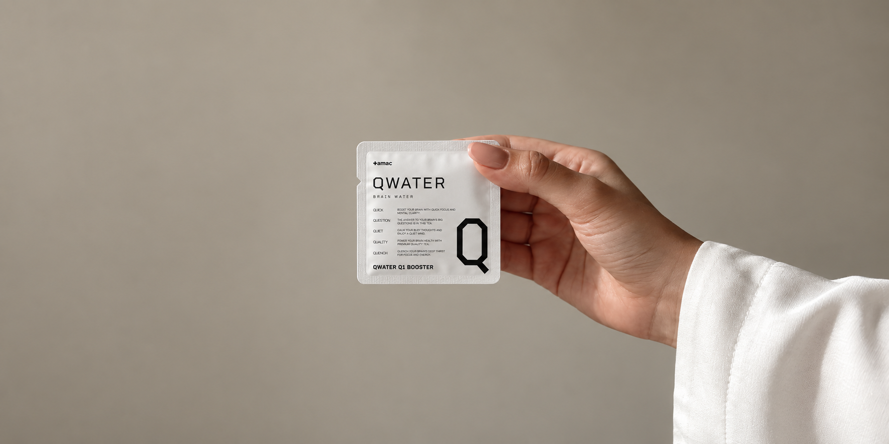
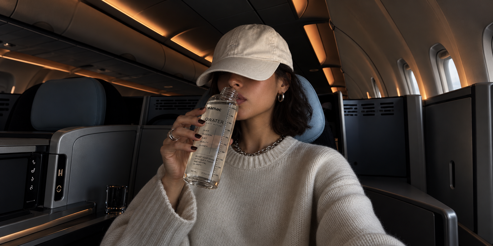
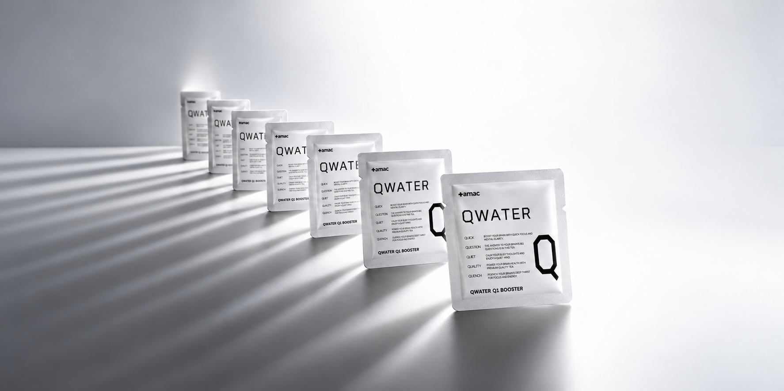
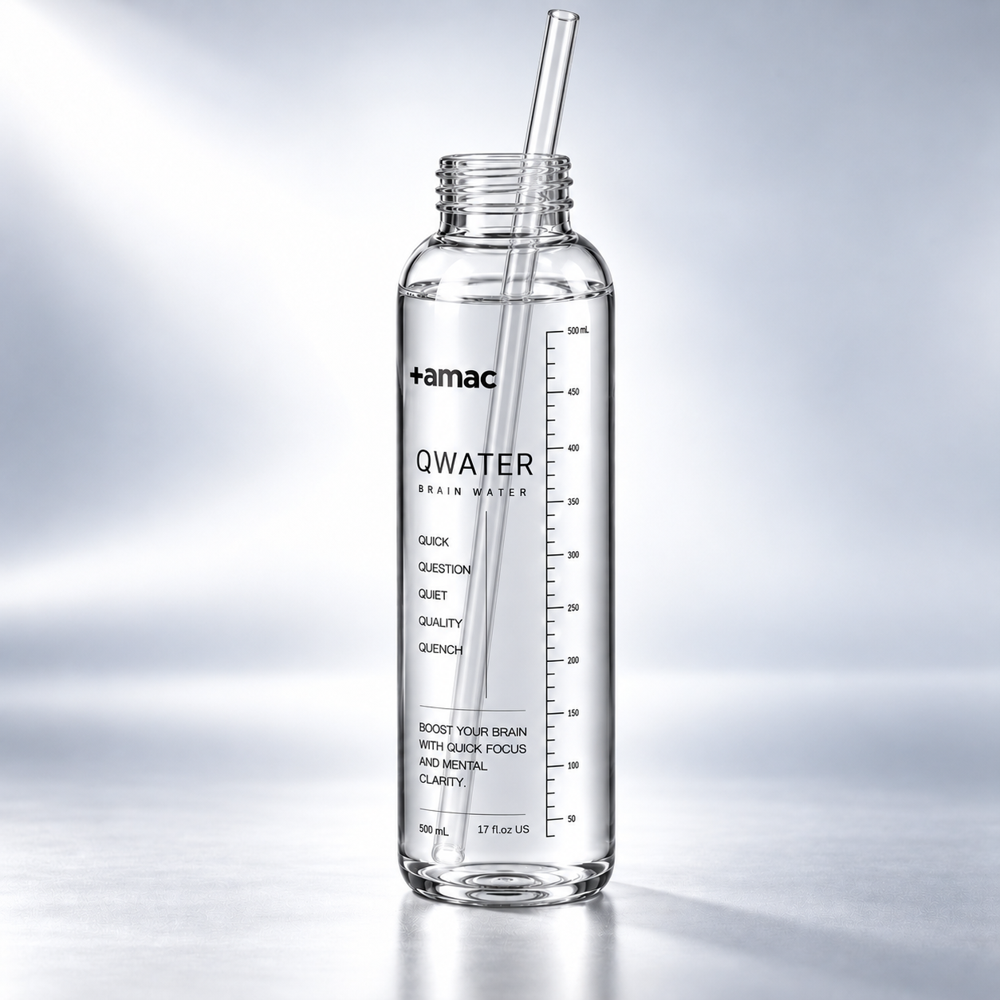
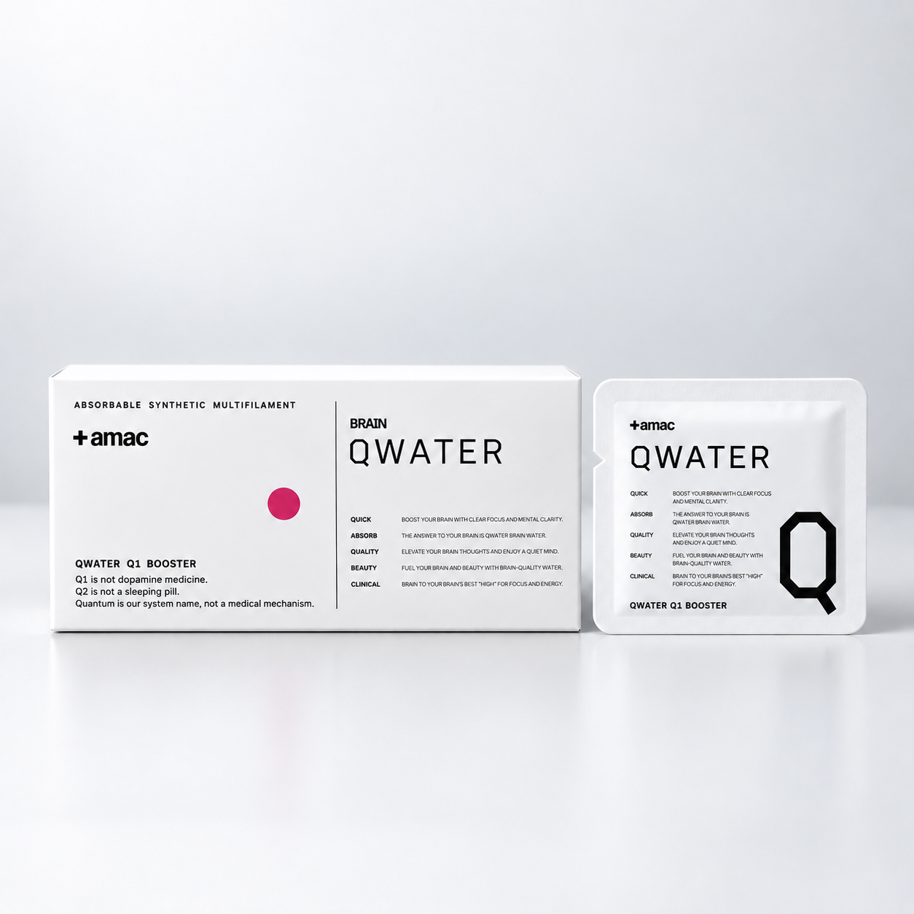
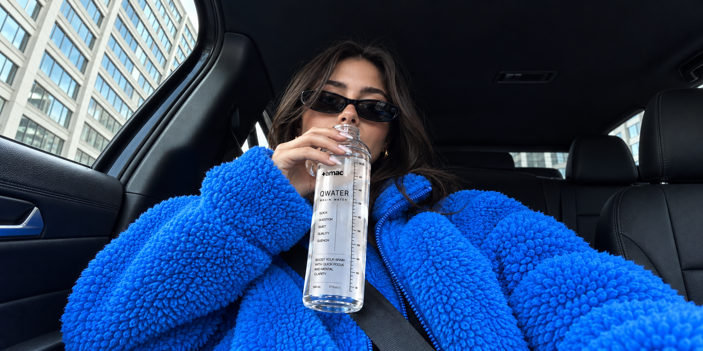

NO CAFFEINE
AT NIGHT.
하나의 제품 안에서 서로 반대 방향의 메시지를 만들지 않습니다.
Q1에는 목적이 명확한 카페인이 있고 Q2에는 없습니다.
두 챕터의 차이가 성분표에서도 분명해야 합니다.
We do not build contradictory messages into the same system.
Q1 contains caffeine for a clearly defined purpose. Q2 does not.
The distinction between the two chapters should be visible in the ingredient list itself.
Q2 IS NOT
A SEDATIVE.
제품의 역할과 의약품의 역할을 의도적으로 구분합니다.
AMAC는 모호한 표현으로 경계를 흐리지 않습니다.
Q2 is not a sleeping pill or sedative.
We deliberately distinguish the role of a consumer wellness product from the role of medicine.
AMAC does not blur that boundary with vague language

WHY WE LEFT OUT
MELATONIN.
2026년 한국에서는 식물성 멜라토닌 제품의 함량과 광고에 대한 소비자 안전 문제가 실제로 제기됐습니다.
AMAC는 유행하는 성분을 따라가기보다 장기적으로 설명할 수 있는 포뮬러를 선택합니다.
없다는 사실까지 제품 설계의 일부입니다.
In Korea in 2026, consumer-safety concerns were raised regarding the content and advertising of plant-derived melatonin products.
AMAC chooses formulas we can explain responsibly over the long term rather than simply following fashionable ingredients.
What we leave out is part of the design.

WHY EHT IS NOT
AT THE CORE.
흥미로운 연구가 있다는 것과 제품 효능이 충분히 입증됐다는 것은 다릅니다.
EHT 관련 2026년 공개 논문에는 동물시험 데이터가 있지만 Q2의 수면·회복 주장을 뒷받침하기에는 아직 부족합니다.
AMAC Q LAB에서 계속 관찰하되 소비자 제품에서는 앞서가지 않습니다.
Interesting research is not the same as sufficient evidence for a product claim.
Published 2026 research involving EHT includes animal data, but that is not enough to establish Q2’s sleep or recovery claims.
AMAC Q LAB will keep watching the science without getting ahead of it.

RICE BRAN ETHANOL
EXTRACT. 1,000 mg.
국내 개별인정형 원료인 미강주정추출물은 일일섭취량 1,000mg에서 ‘수면에 도움을 줄 수 있음’이라는 기능성이 인정되어 있습니다.
Q2의 수면 관련 중심축을 애매한 유행 원료가 아니라 실제 인정원료에 둡니다.
이것이 Q2가 건기식으로 가야 하는 이유입니다.
Rice bran ethanol extract is individually recognized in Korea with functionality stating that it may help support sleep at a daily intake of 1,000 mg.
Q2 places its sleep-related core on a recognized ingredient rather than an ambiguous trend ingredient.
That distinction matters.
L-THEANINE.
200 mg.
테아닌의 국내 인정 기능성은 ‘스트레스로 인한 긴장완화에 도움을 줄 수 있음’입니다.
Q2는 이를 수면제처럼 과장하지 않고 저녁 포뮬러의 또 하나의 기능성 축으로 사용합니다.
정확한 표현이 곧 과학적인 표현입니다.
The recognized functionality of L-theanine in Korea is that it may help reduce tension caused by stress.
Q2 uses it as another functional axis of the evening formula without presenting it as a sleeping drug.
Scientific language begins with accurate language.

MAGNESIUM.
NO EXAGGERATION.
마그네슘은 신경과 근육 기능 유지 등에 필요한 영양성분입니다.
그 사실을 곧바로 ‘잠을 재우는 미네랄’이라는 표현으로 확대하지 않습니다.
Q2는 각각의 원료가 할 수 있는 말만 합니다.
Magnesium is an essential nutrient involved in maintaining normal nerve and muscle function.
We do not automatically turn that fact into a claim that it is a “sleep mineral.”
Q2 only says what each ingredient can legitimately support.

THE LIMITS OF
“SLEEP ELECTROLYTES.”
Q2에는 나트륨·칼륨·마그네슘을 구성할 수 있습니다.
하지만 이 조합 자체를 새로운 수면 과학처럼 설명하지 않습니다.
Sleep Electrolytes는 시스템 이름이지 의학적 메커니즘이 아닙니다.
Q2 can contain sodium, potassium and magnesium.
But we do not present that combination as a newly discovered sleep mechanism.
“Sleep Electrolytes” can be a system name—not a medical mechanism.